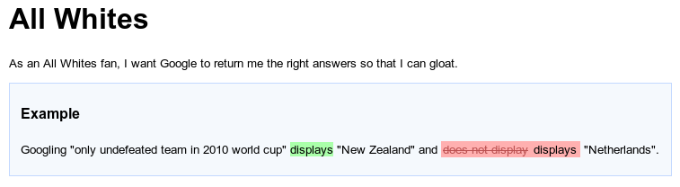
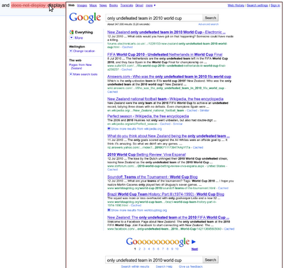
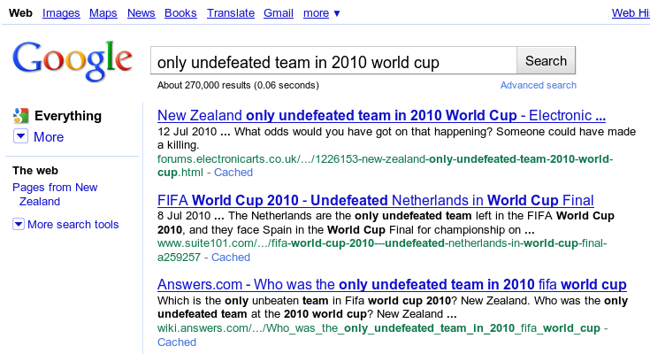

Screenshot Extension
Introduction
This extension has two main uses - taking screenshots to help diagnose test failures, and/or explicitly adding screenshots to the output for documentation purposes.
By default, the whole screen is captured using java.awt.Robot. As an alternative, custom screenshots can be captured using the ScreenshotTaker interface. For example, when using frameworks such as Selenium, a custom screenshot taker can capture an image of the entire web page, even if the test is running in the background.
Diagnosing test failures
When running GUI tests it can be difficult to determine what was being shown on the GUI at the time of failure [1], especially if the tests are running in the background or on a Continuous Integration server.
This extension adds screenshots to the Concordion output when failures or exceptions occur. It can also be configured to add screenshots on successful assertions.
The screenshot is displayed when you hover over the relevant element. Clicking on the element will open the image in the current browser window. For example, hovering over the failure in this web test:
shows a screenshot of the browser page at the time the failure occurred:
Clicking on the failure opens the image for further inspection:
(Note: this image has been truncated to save space)
[1] The screenshot is invoked by an assertion listener, so will occur a very short period after the failure actually occurred. In most cases, this small delay is of no consequence.
Explicitly adding screenshots to the output
This extension also provides a Concordion screenshot command that explicitly add screenshots to the output HTML for documentation purposes.
To use the command, add an attribute named screenshot using the namespace "urn:concordion-extensions:2010" to an element in your Concordion HTML. For example:
<html xmlns:concordion="http://www.concordion.org/2007/concordion"
xmlns:ext="urn:concordion-extensions:2010">
....
<div ext:screenshot=""/>
...
By default, the screenshot is embedded in the output HTML. If you'd rather have it linked, set the attribute value to 'linked', for example:
<p>See <span ext:screenshot="linked" style="text-decoration: underline;">this screen</span></p>
NOTE: If you want to use the extension only as a command, and not to capture screenshots of test failures, you will need to use a custom configuration that sets setScreenshotOnAssertionFailure and setScreenshotOnThrowable to false. See below for custom configuration details.
Configuration
Default Configuration
By default, this extension will add screenshots to the output whenever an assertion fails, or an uncaught Throwable occurs in the test.
To install the extension:
System.setProperty("concordion.extensions", "org.concordion.ext.ScreenshotExtension");
Custom Configuration
The extension can be customised using a ConcordionExtensionFactory to create and modify the extension.
For example, the following code configures a custom ScreenshotTaker, takes screenshots on assertion success as well as failure, and limits the maximum width of the screenshot images on mouse hover to 400 pixels.
package nz.co.twoten.concordion.selenium;
import org.concordion.api.extension.ConcordionExtension;
import org.concordion.api.extension.ConcordionExtensionFactory;
import org.concordion.ext.ScreenshotExtension;
import org.openqa.selenium.WebDriver;
public class ScreenshotExtensionFactory implements ConcordionExtensionFactory {
private static WebDriver driver;
public static void setDriver(WebDriver driver) {
ScreenshotExtensionFactory.driver = driver;
}
@Override
public ConcordionExtension createExtension() {
SeleniumScreenshotTaker screenshotTaker = new SeleniumScreenshotTaker(driver);
ScreenshotExtension extension = new ScreenshotExtension();
extension.setScreenshotTaker(screenshotTaker);
extension.setScreenshotOnAssertionSuccess(true);
extension.setMaxWidth(400);
return extension;
}
}
To install this example extension factory:
System.setProperty("concordion.extensions",
"nz.co.twoten.concordion.selenium.ScreenshotExtensionFactory");
Screenshot Taker
By default, the screenshot will be of the full visible screen. This can be overridden using a custom ScreenshotTaker. For example, the SeleniumScreenshotTaker in the above examples ensures that only the browser window is captured, that the full browser page is captured and that it is captured regardless of whether the browser window is currently displayed.
Specification
See also the screenshot specification.
Acknowledgements
This extension was partly inspired by Mark Derricutt's ScreenshotCommand, and by Adam Setch's post to the Concordion list.